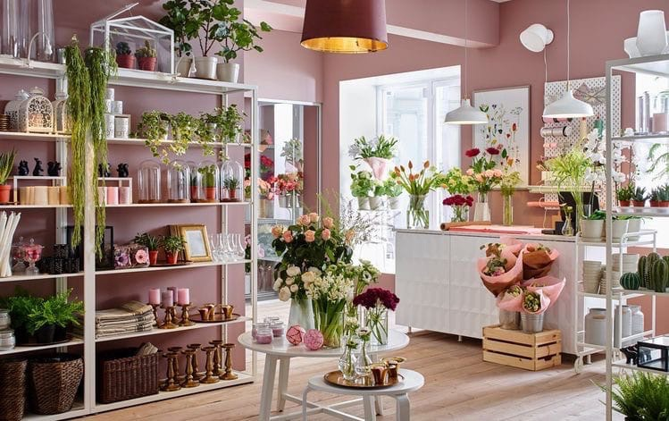

О нас
Flora Design - салон флористики и декора со своим персональным стилем и индивидуальным подходом к каждому клиенту. Современная классика и нестандартные флористические решения - это Flora Design.
Мы постоянно учимся ремеслу, ищем новые формы и образы, вдохновение во всем, что нас окружает, хватая из леса коряги, шишки, кору и порой непонятные простому человеку вещи из леса, любуемся и наполняем ими свое творчество. Для нас высшим проявлением флористического совершенства является общение с природой, нахождение баланса между мастерством и искусством, постоянное желание делиться знаниями, позитивом и красотой с нашими клиентами.
Наши принципы:
Экологичность, декоративность, честность, открытость, доброжелательность, любопытность, трудолюбие, обязательность, нестандартный подход к обычным вещам, мастерство. Все это является основой всей нашей работы.
Мы предлагаем:
- Консультации по традициям, правилам, техникам и законам современной флористики.
- Работа с живыми растениями, искусственными цветами, натуральными природными материалами, декоративными элементами, сувенирами и полиграфической продукцией.
- Подбор индивидуального стиля, образа с использованием элементов флористической аранжировки.
- Идеи и воплощения для букетов, корзин, композиций.
- Разнообразие креативных решений в разных областях флористики: свадьба, оформление праздничных мероприятий, интерьеров, корпоративных событий, траурная и новогодняя флористика.
- Выполнение флористических работ в технике любого уровня сложности, соответствующей виду аранжировки, ее стилю и назначению.
- Доброжелательное и чуткое отношение к клиентам, применяемому живому природному материалу и окружающей среде.
Талантливые флористы, прекрасные свежие цветы, стильный упаковочный материал, логотип, ленты, трепетное отношение к каждому клиенту - все это рождает индивидуальную концепцию и выделяет нас среди других цветочных салонов.
Мы выслушиваем пожелания каждого клиента и стараемся подобрать для него самый лучший вариант цветочного подарка для дорогих сердцу людей. Студия цветов Flora Design - это тандем роскошных цветов и эксклюзивной упаковки.
